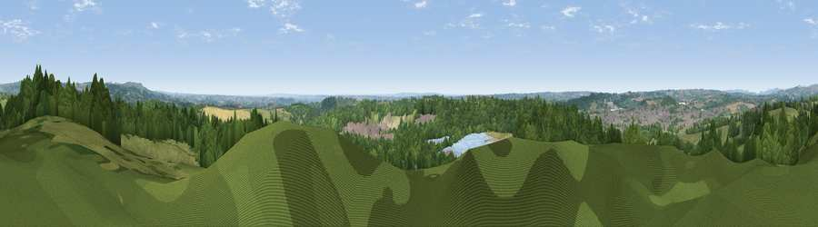

Viewpoint near Cheadle
#11356 in England · top 9% of its area beats it · near CheadleWhere it is
The exact computed spot (SK 03225 42425). Click the marker for map links.
The view, rendered

A 360° render of this exact spot computed from the terrain model, tree cover and land cover — summer colours, afternoon light, calibrated against photographs of famous viewpoints. Real trees, hedges and buildings will differ in detail.
The panorama
Grey silhouette: terrain skyline in each direction (720 bearings, Earth curvature and refraction included). Dashed green: skyline with trees (+15 m) and buildings (+8 m) as obstacles. Blue strip: how far the ground is visible on each bearing.
Where the view opens
Wedge length = distance to the farthest visible ground on that bearing (vegetation-aware). Rings at 10, 25 and 50 km.
What fills the view
53% woodland · 40% grassland · 2% built-up · 2% water · 2% cropland ·
Angular shares of the visible panorama (visual magnitude), not map area. Landscape diversity 0.42 (0–1 Shannon).
Key numbers
More beautiful places nearby
The staircase of upgrades: each row has a higher view potential than everything closer. Driving times are estimates from straight-line distance, calibrated against real road routing — check an actual route before setting out.
| Place | Direction | Drive | Score |
|---|---|---|---|
| Viewpoint near Oakamoor | NE · 4 km | ~9 min | 62.9 |
| Viewpoint near Cauldon Lowe | NE · 7 km | ~15 min | 71.9 |
| Viewpoint near Wootton | ENE · 7 km | ~15 min | 74.8 |
| Tissington Hill | NE · 16 km | ~28 min | 75.5 |
| Viewpoint near Mow Cop | NW · 23 km | ~38 min | 80.2 |
| Viewpoint near Little Wenlock | SW · 52 km | ~74 min | 84.2 |
| The Wrekin | SW · 53 km | ~74 min | 85.0 |
| Viewpoint near Little Wenlock | SW · 53 km | ~75 min | 86.6 |
52.97916, -1.95342 · source: screening · position refined by local search. Computed location — check access rights before visiting.